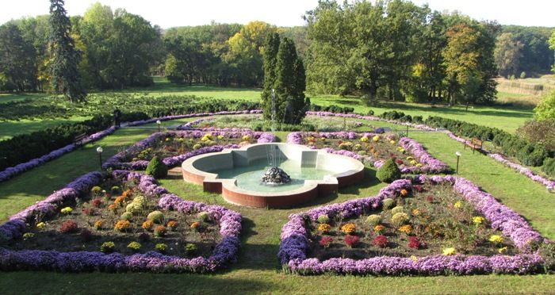
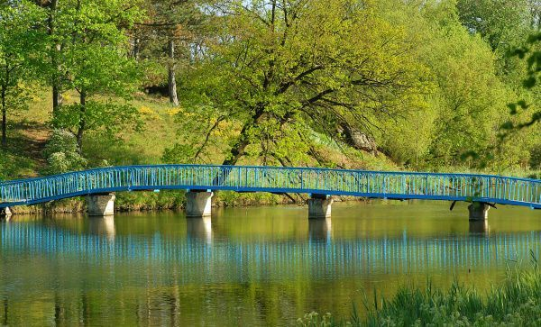
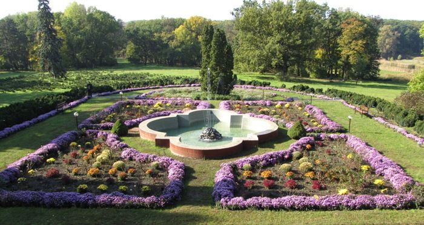
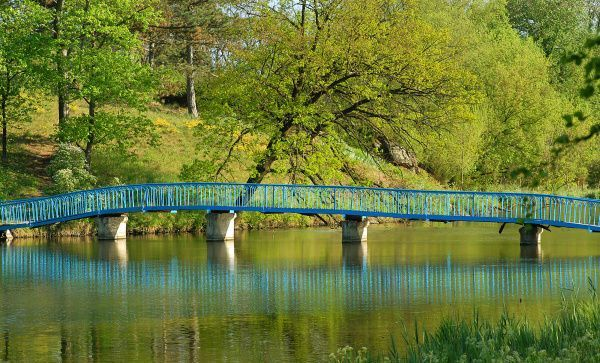

Кіровоградській області. На 109 гектарах серед степів розкинувся дендропарк «Веселі Боковеньки». Заснований він був в 1893 році любителем і знавцем паркової справи Миколою Давидовим. Дане місце прекрасно і романтично. Екскурсоводи розповідають, що на створення цього природного дива Миколи надихнуло нерозділеного почуття любові до сусідки Ганні.
На території дендропарку росте 963 види чагарників і дерев. Серед цього розмаїття можна побачити цегляна, оцтове, тюльпанове, залізне дерево, кора якого тоне у воді, столітній дуб, рослини, привезені з Південної Америки, неймовірно красиву колекцію бузку та багато іншого. У парку є річка Боковеньки і три озера. Це прекрасне місце підходить для того, щоб насолодитися природою, відпочити від міської суєти, прогулятися пішки або на велосипеді, поплавати, влаштувати пікнік. У невеликих будиночках можна залишитися на ніч, в парку є спеціальні місця для розведення вогнища, зручні столики для обіду під відкритим небом.
 


